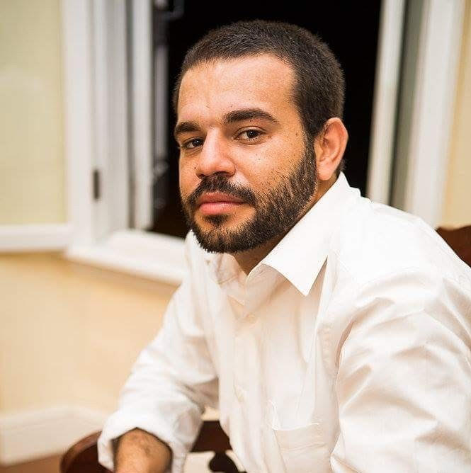
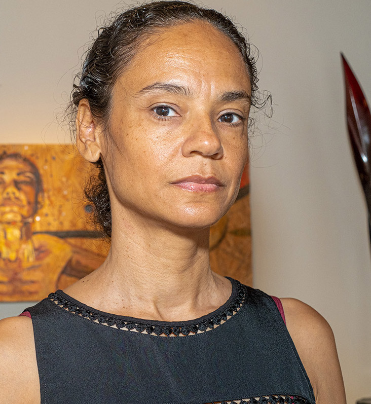
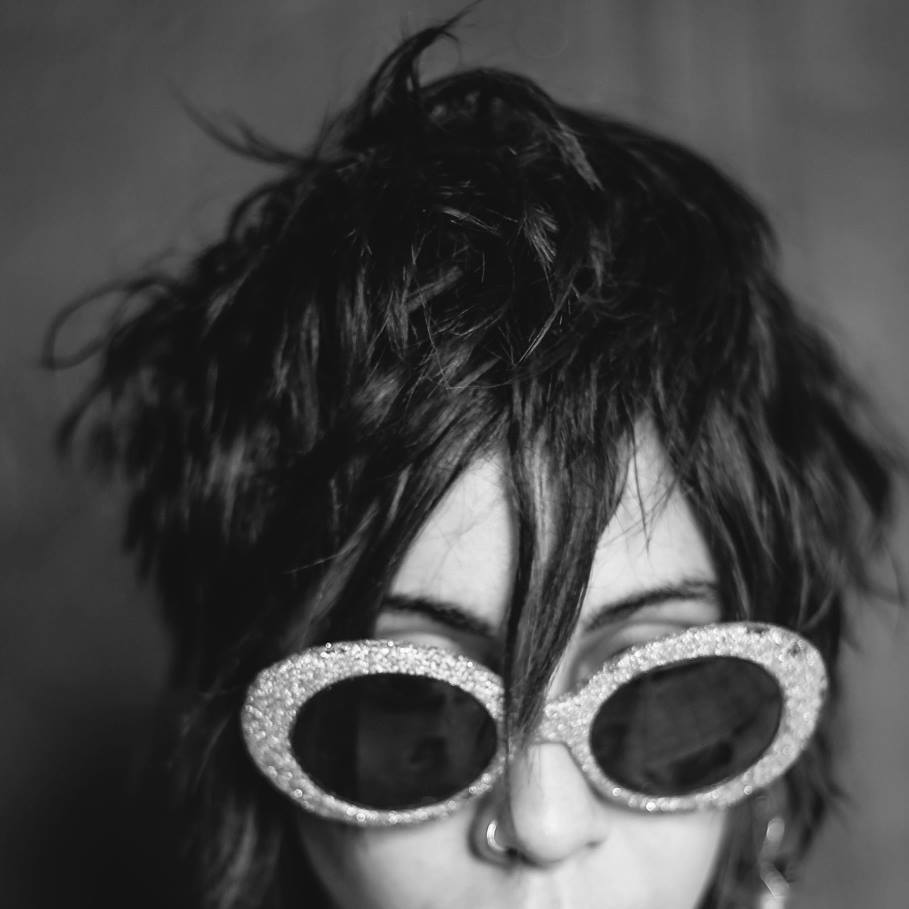
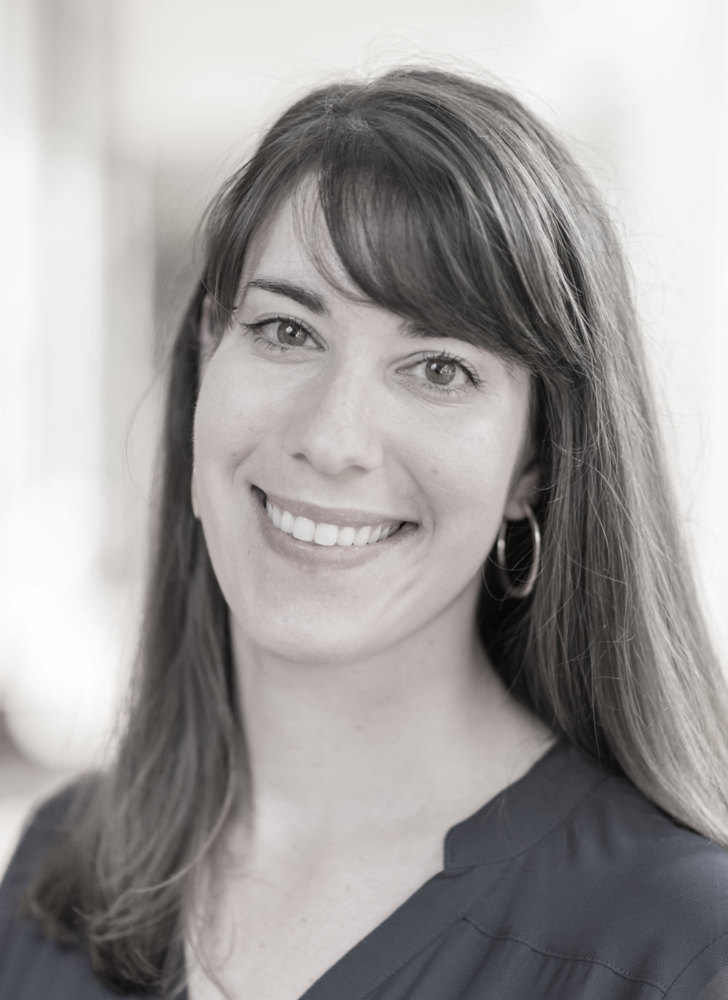
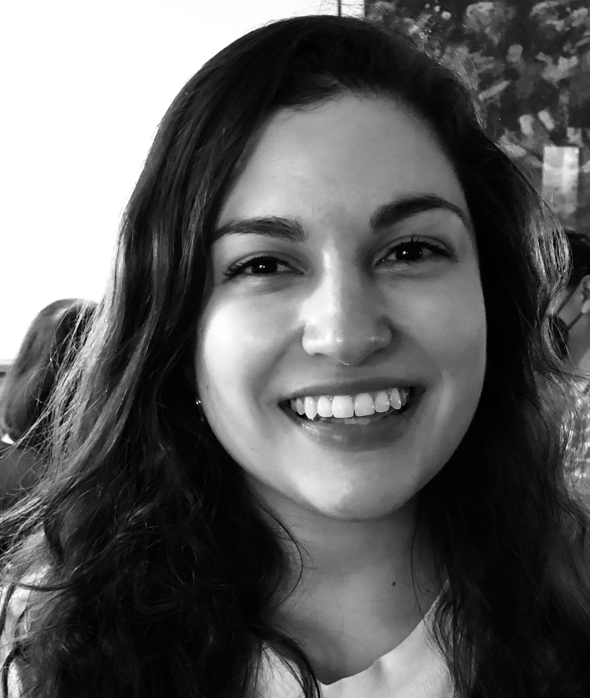
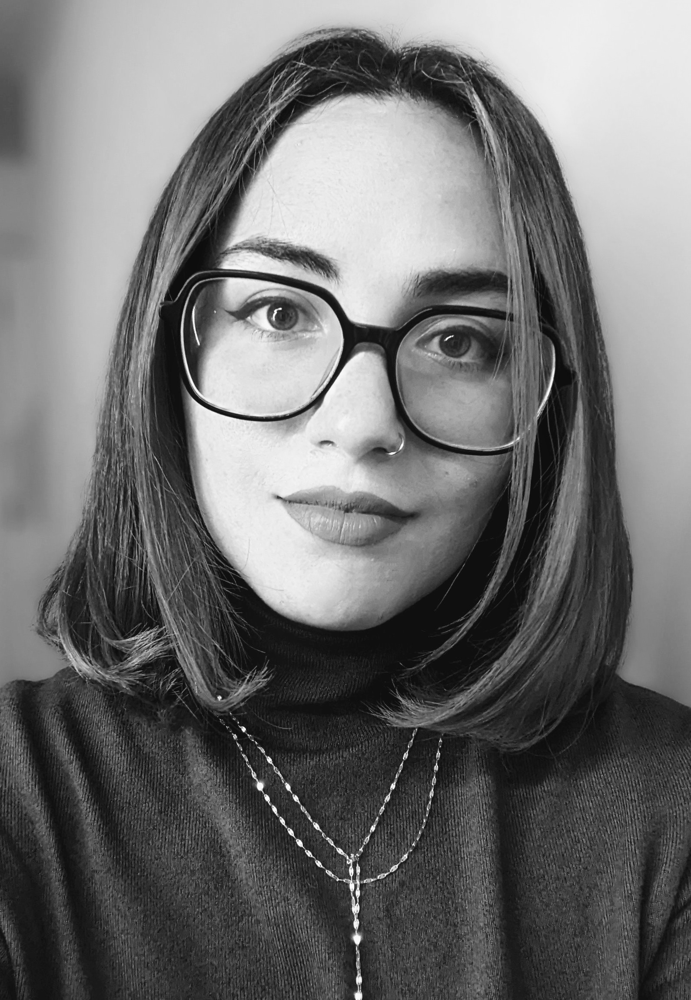

 David Berg is the founder of Blackwood Imaging, a photography collective dedicated to showcasing the culture and artists of the Caribbean Islands. He lives, shoots, and edits just outside Frederiksted, St. Croix, on an old Danish plantation close to his family home. Check out the artist’s website here https://www.blackwoodimaging.com/
 Sally Binard is an artist and marine biologist whose work is deeply influenced by her educational background in biology, psychology, and scientific illustration. A child of first generation Haitian and Belgian immigrant parents, she currently lives in Key West, Florida, where she is working on a series of portraits exploring experiences of mixed-race identity. Check out the artist’s website here. https://www.sallybinard.com/
 Jo Cosme is a multidisciplinary artist from San Juan, Puerto Rico who was displaced to Seattle, WA in the aftermath of Hurricane María. Her politically provocative work includes photography, video, installations, sound pieces, and illustrations. Check out the artist’s website here https://www.jocosme.com/
Nicole Delgado is a Puerto Rican poet, artist, and found of La Impresora, an artist-led studio specializing in Risograph printing and small-scale editorial work. It is the only project of this nature in the Caribbean. Delgado has published several books of poetry, most recently Días Naturales and Periodo Especial. Check out the artist’s website here. https://cargocollective.com/laimpresora/CV
Alfonso Fuentes Colón is a composer, improvisation pianist, and professor at the Conservatory of Music of Puerto Rico. His concerto for clarinet and large orchestra, “Oda para los árboles caídos,” is inspired by the devastation caused by Hurricane María. He is accompanied by the clarinetist Oskar Espina Ruiz. Check out the artist’s website here. https://oskarespinaruiz.com/ http://www.alfonsofuentes.com/
Sarabel Santos Negrón is a multidisciplinary artist, educator, and the director of the Museo de Arte de Bayamón in Puerto Rico. Her work on memory and landscape is created with found materials such as high-consumption industrial supplies, paper, sound recordings, photographs, and mixed media. Check out the artist’s website here. http://www.sarabelsantos.com/
 Charlotte Rogers | project manager
Charlotte Rogers | project manager
Charlotte Rogers is the Lisa Smith Discovery Chair Associate Professor of Spanish at the University of Virginia, where she specializes in twentieth- and twenty-first-century Latin American and Caribbean environmental humanities. Her work takes a comparative approach to representations of tropical ecologies in contemporary literatures, arts, and cultures. Visit her faculty web page here https://spanitalport.as.virginia.edu/people/profile/cwr4m
 Caroline Whitcomb is a Ph.D Candidate at the University of Virginia in the department of Spanish, Italian, and Portuguese. With Professor Charlotte Rogers, she helped to conduct outreach, gather submissions, recruit and select artist participants, and facilitate the original Coasts in Crisis event at UVA in 2019. Inspired by that event, her dissertation focuses on contemporary Caribbean poetry in the era of climate change. After graduation, she hopes to work in a professional capacity that supports artists and makers and helps them continue to create.
The artists were interviewed by students in the UVA Spanish Graduate Program on September 18th and 19th, 2019:
Lorena Ochoa interviewed David Berg
Thallya Díaz interviewed Sally Binard
Sergio Silva interviewed Alfonso Fuentes
Nicole Talavera interviewed Jo Cosme
Caroline Whitcomb interviewed Nicole Delgado and Sarabel Santos Negrón.
| Charlotte Rogers | Project Manager |
| Caroline Whitcomb | Public Relations & Communications Director |
 Elise Foote | Web Designer
Elise Foote is a Ph.D. Candidate in the English Department at the University of Virginia, where she is writing a dissertation on contemporary Latinx poetry and performance theory. She currently holds the Irby Cauthen Fellowship through the Jefferson Scholars Foundation and is a former Praxis Fellow through the Scholars’ Lab, the university’s center for digital humanities.
 Winnie Pérez Martínez | Web Designer
Winnie Pérez Martínez is a PhD student in Spanish and Digital Humanities in the Spanish, Italian, and Portuguese Department at the University of Virginia, where she is a recipient of the Interdisciplinary Doctoral Fellow in Caribbean Literatures, Arts, and Cultures. Her main research interests concern the collective imaginaries of technology in the Anglophone, Francophone, and Hispanophone Caribbean of the 20th and 21st centuries. She traces these imaginaries through representations of technology within Caribbean science fiction and urban planning. Visit her student page here. You can also find her on twitter.
https://spanitalport.as.virginia.edu/people/wep5cd
https://twitter.com/_wepm